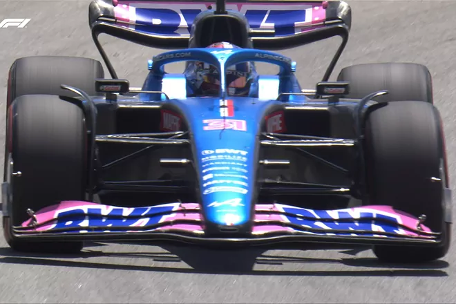

Rodrygo clama tras la agresión: "Fali me mira y me da, es una vergüenza, no sé para qué está el VAR" El brasileño, enfadado tras el golpe del central del Cádiz.
Ocon primero, Alonso cuarto (medios) y Ferrari en mitad de tabla  Los Libres 2, donde se miden los ritmos con carga de gasolina, dejan un panorama irreal antes del Sprint (20.30 horas).